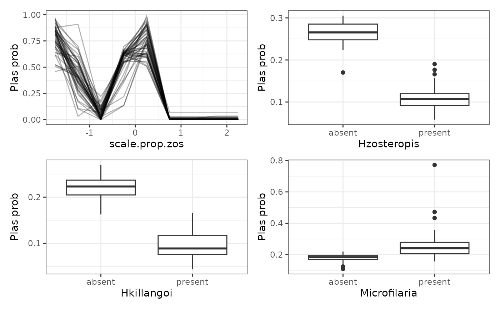

This function bootstraps model predictions and generates partial dependence plots for each response variable. It also creates a combined plot for the top variables of interest.
Arguments
- mrIML_obj
A list object returned by
mrIMLpredicts().- mrBootstrap_obj
A list object returned by
mrBootstrap().- vi_obj
A list object returned by
mrVip(). Ifvi_objis not provided then it is created insidemrPD_bootstrapby runningmrVip()- target
The target variable for generating plots.
- global_top_var
The number of top variables to consider (default: 2).
Value
A list with two elements:
*[[1]] A data frame of the partial dependence grid for each response model, predictor variable, and bootstrap
*[[2]] A list of partial dependence plots for each predictor variable in the target response model.
Examples
library(tidymodels)
data <- MRFcov::Bird.parasites
Y <- data %>%
select(-scale.prop.zos) %>%
dplyr::select(order(everything()))
X <- data %>%
select(scale.prop.zos)
model_rf <- rand_forest(
trees = 50, # 50 trees are set for brevity. Aim to start with 1000
mode = "classification",
mtry = tune(),
min_n = tune()
) %>%
set_engine("randomForest")
mrIML_rf <- mrIMLpredicts(
X = X,
Y = Y,
X1 = Y,
Model = model_rf,
prop = 0.7,
k = 2,
racing = FALSE
)
#>
|
| | 0%
|
|================== | 25%
|
|=================================== | 50%
|
|==================================================== | 75%
|
|======================================================================| 100%
#> i Creating pre-processing data to finalize unknown parameter: mtry
#> i Creating pre-processing data to finalize unknown parameter: mtry
#> i Creating pre-processing data to finalize unknown parameter: mtry
#> i Creating pre-processing data to finalize unknown parameter: mtry
mrIML_rf_boot <- mrIML_rf %>%
mrBootstrap(num_bootstrap = 5)
#>
|
| | 0%
|
|==== | 5%
|
|======= | 10%
|
|========== | 15%
|
|============== | 20%
|
|================== | 25%
|
|===================== | 30%
|
|======================== | 35%
|
|============================ | 40%
|
|================================ | 45%
|
|=================================== | 50%
|
|====================================== | 55%
|
|========================================== | 60%
|
|============================================== | 65%
|
|================================================= | 70%
|
|==================================================== | 75%
|
|======================================================== | 80%
|
|============================================================ | 85%
|
|=============================================================== | 90%
|
|================================================================== | 95%
|
|======================================================================| 100%
mrIML_rf_PD <- mrPdPlotBootstrap(
mrIML_rf,
mrIML_rf_boot,
target = "Plas",
global_top_var = 4
)
#> Warning: NAs produced when calculating MCC. This is common when there is a class imbalance. Substituting NA values with zero.
head(mrIML_rf_PD[[1]])
#> var X counts value label type bootstrap
#> 1 scale.prop.zos -1.75 449 0.31951002 class partial dependence 1
#> 2 scale.prop.zos -1.25 449 0.45060134 class partial dependence 1
#> 3 scale.prop.zos -0.75 449 0.70133630 class partial dependence 1
#> 4 scale.prop.zos -0.25 449 0.61042316 class partial dependence 1
#> 5 scale.prop.zos 0.25 449 0.63184855 class partial dependence 1
#> 6 scale.prop.zos 0.75 449 0.02423163 class partial dependence 1
#> response
#> 1 Hzosteropis
#> 2 Hzosteropis
#> 3 Hzosteropis
#> 4 Hzosteropis
#> 5 Hzosteropis
#> 6 Hzosteropis
mrIML_rf_PD[[2]]
